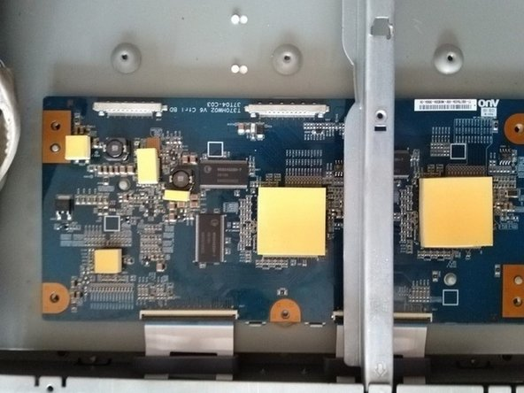
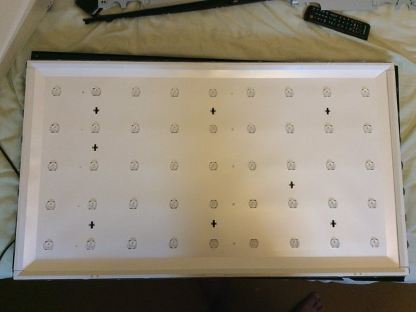

How an LCD panel makes an image and lights it
Follow the video and light paths through the mainboard, display timing, glass, optical layers and LED driver.
Follow two different paths
The image path starts at an input or an application. The mainboard decodes the source and delivers pixel data. A timing controller, often called T-Con, distributes this data to the row and column drivers of the panel. Its physical home varies between products. The driver circuitry changes the electric field at each liquid-crystal pixel. Together with the polarizers and red, green and blue filters, this changes how much light emerges from each subpixel. An LCD needs a source of light behind it. In an OLED display the pixels emit light themselves.

Photo by Arwedus and iFixit contributors, scaled with on-page callouts. Original repair photograph · CC BY-NC-SA 3.0.

Photo by Greg Sully and iFixit contributors, scaled with on-page callouts. Original repair photograph · CC BY-NC-SA 3.0.
Watch the layers come apart. Identify the LCD glass and ribbons first, then the sheets that shape light, and finally the LED array. The operations are for the model in the clip. ShopJimmy's LG LCD backlight disassembly.
| Layer or subsystem | What it does | What problems can look like |
|---|---|---|
| Mainboard and input | Reads external or internal sources and processes the image. | One HDMI input fails while the built-in menu appears correctly, depending on fault. |
| Timing and panel | Generates and distributes the timed signals that address pixels. The glass contains the pixels and may carry bonded drivers at its edge. | Fixed lines, partial image, a lit blank screen or image distortion can also involve a ribbon or supply. Appearance alone rarely identifies one board. |
| LEDs, optics and driver | Supply adjustable, reasonably uniform light. Diffusers spread it and some films direct it forward. | A faint image on a dark screen, dark zones under a white pattern or a local bright spot. Repeat the observation in more than one scene. |
Why an LED driver controls current
Each conducting LED drops a voltage that depends on current, part and temperature. LEDs in series carry the same current. The driver adjusts voltage as needed to establish its target current, within its limits. For illustration, twelve LEDs each dropping 3 V need roughly 36 V plus any driver headroom. Actual strip voltages, current, connector labels and switching states depend on the design. In systems with multiple strings, separate current sinks can balance and monitor them.
An open LED breaks its string. The driver may raise voltage while seeking its current, then protect itself by shutting a channel or the boost supply down. A shorted LED can leave a dark spot while the remaining LEDs carry current. A driver can also keep all LEDs dark because its enable, supply or dimming command is absent. The TI example illustrates a single string, current control and overvoltage protection. TI TPS61197 single-string driver · TI eight-string driver example.
Connect the clue to the next test
When you see a faint moving menu during the flashlight test, the panel is modulating enough light to show an image in that area. Your next question is what deprived it of light. A glowing screen with corrupted internal test patterns sends you toward the image path instead. A cold failure and an after-warm-up failure may produce different results, so run the same agreed test at both stages. Use P99 to isolate the branch with the case shut and P100 to prove the open-string behaviour on an isolated trainer.